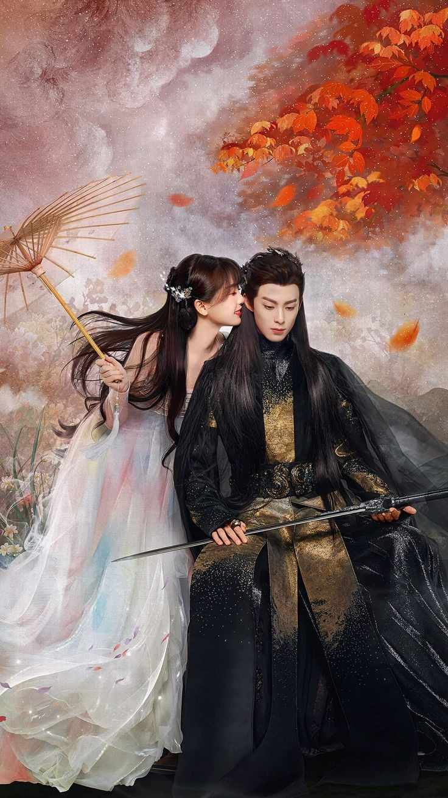
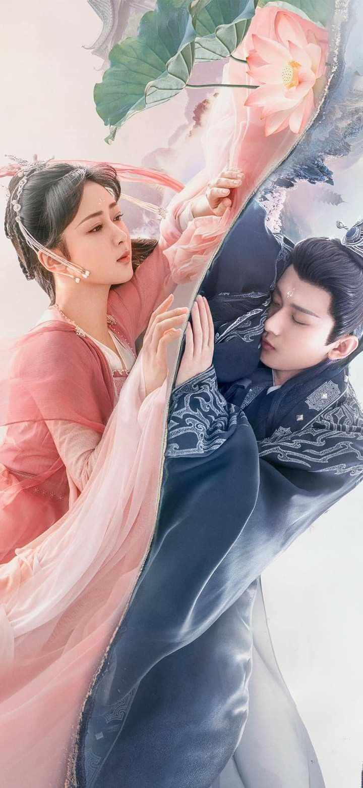
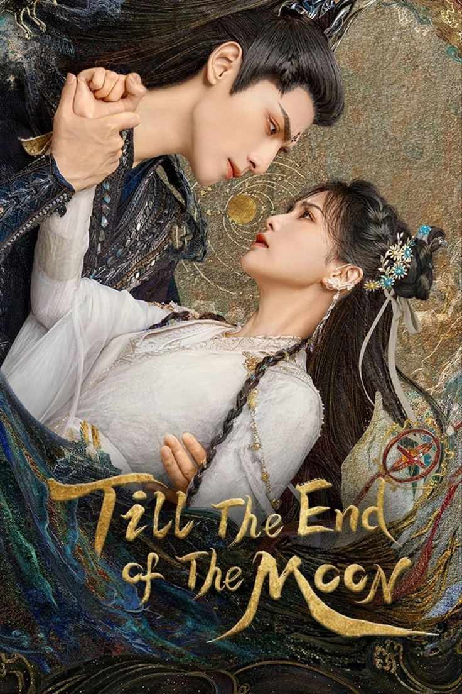
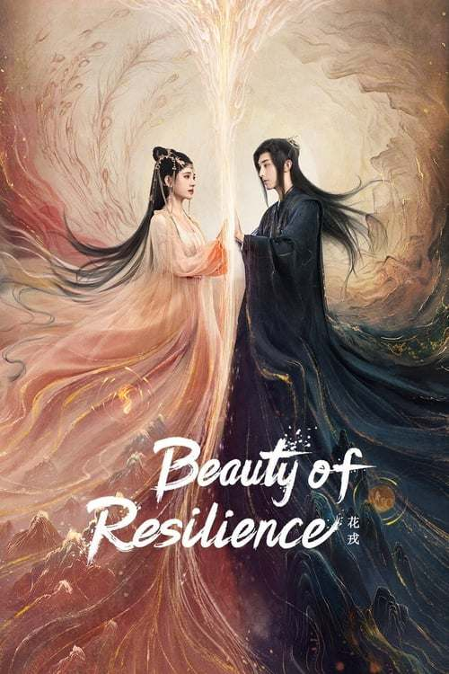

Watching a fantasy C-drama is about enjoying a Chinese TV show filled with magic, mythical creatures, and exciting adventures. These shows often take place in beautiful, imaginary worlds where characters have special powers, fight evil, or go on big quests. The stories can be about love, friendship, and bravery, with lots of twists and surprises. The costumes, scenery, and effects make the fantasy come to life, making it fun and interesting to watch.
"Love Between Fairy And Devil"

When a low-ranked fairy accidentally resurrects a powerful demon, their fates become cosmically entangled as the world is thrown into turmoil.
"Immortal Samsara"

A descendant of an ancient tribe, Yan Dan falls for Lord Ying Yuan but must forget him for 800 years. With Yu Mo's aid, she helps demon hunter Tang Zhou, Ying Yuan's reincarnation, uncover mysteries while searching for ancient relics.
"Till The End Of The Moon"

An immortal, Li Susu is destined to time-travel 500 years back to prevent the death of a hostage prince to stop his transformation into Devil God, who destroys four continents and three realms.
"Beauty of Resilience"

A long-disappeared sign of Phoenix appears among a group of teenagers in the triennially held ceremony for mortals, who are then sent to learn immortal arts. The heavenly realm sends Sun God disguised as their teacher to investigate this.